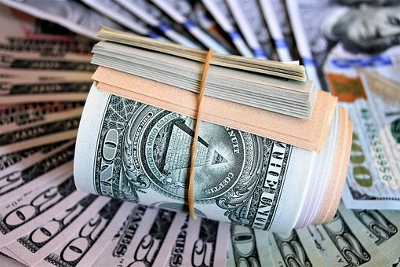

Según Chainalysis, es probable que la caída de FTX tenga un efecto relativamente menor en el ecosistema de las criptomonedas que la desaparición de Mt. Gox.
Jardine señala que en 2014, cuando colapsó Mt. Gox, los exchanges centralizados (CEX) eran los únicos en el juego,
mientras que a finales de 2022 casi la mitad de todas las entradas de los exchanges fueron capturadas por exchanges descentralizados (DEX) como Uniswap y Curve...
IR A LA NOTICIA
Como parte de la reciente declaración de bancarrota, el extinto exchange de criptomonedas FTX, junto con 101 de las 130 empresas afiliadas,
anunció el lanzamiento de una revisión estratégica de sus activos globales.
La revisión es un intento de maximizar el valor recuperable para las partes interesadas...
IR A LA NOTICIA
Tras Francia e Italia, España se convierte en el tercer país de la Unión Europea que ha registrado a Binance como proveedor de activos digitales.
La plataforma de intercambio de criptomonedas líder Binance ha anunciado hoy que su filial española, Moon Tech Spain,
se ha registrado en el Banco de España como Proveedor de Servicios de Activos Virtuales (VASP) el 7 de julio...
IR A LA NOTICIA
En primer lugar, se trata de un registro cuyo objetivo es verificar que empresas como Binance disponen de procedimientos
y herramientas de prevención en materia de blanqueo de capitales y de financiación del terrorismo.
Gracias a su inscripción en este registro, Binance podráá seguir colaborando con las autoridades españolas en la lucha contra estos delitos.
Es una cuestión de estricto cumplimiento de la ley y de responsabilidad social.
Creemos que nuestros usuarios no quieren que sus activos y fondos queden expuestos a delincuentes financieros o que se puedan ejecutar transacciones sin su permiso...
IR A LA NOTICIA
Casi desde que salió Bitcoin, se ha situado en el centro de los debates, con posturas a favor y en contra por cuestiones como si es dinero o no, si es una reserva de valor o no,
en qué está respaldado, sí es mejor que el dinero Fiat o, si sólo es un instrumento especulativo que generará una gran burbuja que estallará
en forma negativa para todos aquellos que creen en él.
Lo cierto es que a lo largo de los años ha adquirido una gran popularidad tanto entre la gente normal, así como entre grandes personajes de todos los ámbitos,
e incluso, reconocidos empresarios y directivos de grandes empresas comienzan a arriesgarse y voltear a ver al bitcoin como un aporte de valor real,
tanto personal como para sus empresas, pero ¿quiénes son y por qué lo están haciendo?...
IR A LA NOTICIA

La compra anunciada fue realizada a un precio promedio de 20,817 dólares por BTC y, de esta forma,
la empresa acumula hasta la fecha 129,699 BTC adquiridos por aproximadamente 3,98 mil millones de dólares a un precio promedio de 30,664 dólares por Bitcoin.
El anuncio fue dado a conocer por Michael Saylor a través de un tweet publicado el miércoles 29 de junio.
El CEO de MicroStrategy reveló que la empresa compró 480 BTC por 10 millones de dólares...
IR A LA NOTICIA
La reconocida inversionista Cathie Wood, ofreció una presentación en el evento Bitcoin 2022 que se lleva a cabo en el Miami Beach Convention Center,
desde donde indicó que Ark Invest, compañía que dirige, reitera un precio objetivo para el Bitcoin de un millón de dólares para el 2030.
"El Bitcoin es el primer sistema monetario basado en reglas digitales privadas globales y de código abierto en la historia del mundo.Es una idea muy grande”,
señaló la empresaria en su conferencia “El futuro es brillante”, junto al CEO de MicroStrategy, Michael Saylor...
IR A LA NOTICIA